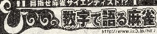
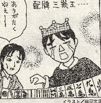

近代麻雀に「ひいの数字で語る麻雀」というコラムがある。

今月号（06.12.15）のそのコラムは、手牌に連続嵌張（    ）と辺張（ ）と辺張（  ）、あるいは三連続嵌張（ ）、あるいは三連続嵌張（  ２）と辺張（）があった場合、何を切り落としていった方がテンパイ効率がいいかというような事がテーマ。そのコラムにあった、赤羽文学さんのイラストがコレ。 ２）と辺張（）があった場合、何を切り落としていった方がテンパイ効率がいいかというような事がテーマ。そのコラムにあった、赤羽文学さんのイラストがコレ。

とっても面白かったので、アガリ役とすることにした。（^-^； ただイラストでは配牌三嵌王であるが、これはほとんど不可能なので手作りＯＫとした。とうぜんアガリが三嵌王の形となればいいので、次の形は と の二門張となる。 の二門張となる。
           
で、イラストでは が雀頭となっている。雀頭が字牌でなくても下記のような形も三嵌三メンツと言えないことはない。 が雀頭となっている。雀頭が字牌でなくても下記のような形も三嵌三メンツと言えないことはない。


特に下記の形であれば、これならいいじゃないかと言う気がしないでもない。
しかしこれをＯＫとすると、これもＯＫのような気がしてくる。

こうなると、だんだん形が怪しげになる。(笑) そこであくまでイラストに忠実とし、雀頭は字牌オンリー（三元牌でも可）とする。
ほいでイラストでは三嵌が３種類のパターンとなっている。
このほかに２種類パターンと１種類パターンがあるが、ま、みな同じ得点ということで。
２種類パターン
１種類パターン
   
日本麻雀で採用されるのは、ちと難しそう。しかしバラバラ役満載の中麻なら採用の可能性が....
|